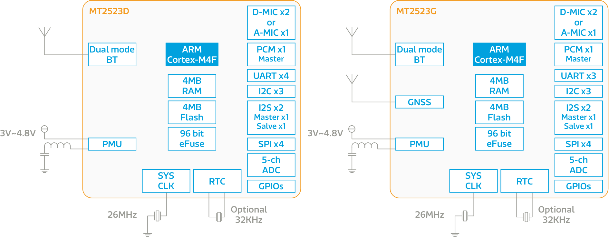

MT2523
概述
聯發科技 MT2523 產品系列 (MT2523D/MT2523G) 是具備高整合度的系統封裝(SiP)，包含微控制器單元、低功耗全球導航衛星系統 (僅限MT2523G)、雙模藍牙，以及電源管理單元（PMU）。微控制器單元是含有浮點運算支援的 ARM Cortex-M4，晶片內含 4 MB PSRAM 和 4 MB 快閃記憶體。 MT2523 還支援 UART、 I2C、 SPI、 I2S、 PWM、 SDIO、 MSDC、 USB、 PCMIF、 ADC 和雙數位麥克風等介面。
-
高度整合射頻 + 微控制器 + 記憶體
-
低功耗 RTC 模式
-
支援多種時脈和電壓模式，在改進和延長電池壽命的同時保持高效性能
-
可在 10μs 內從睡眠模式快速切換到活動模式
MT2523G 具備衛星定位功能，支持多種衛星系統射頻，包括 GPS、 GLONASS、 GALILEO、 北斗，以最低的功耗達到業界最高水準的靈敏度、 準確度和第一次定位時間（TTFF）。 它支援不同的定位和導航應用，包含 SBA 測距（WAAS、 EGNOS、 GAGAN 和MSAS），QZSS、 DGPS（RTCM） 和輔助定位系統（A-GPS）。 它還包含多達12個頻道的主動式多音干擾消除器（MTAICTM）。
雙模式藍牙子系統，支援藍牙 2.1 和低功耗藍牙 4.2，包含藍牙無線電、基帶、鏈接控制器。
顯示元件支援 MIPI-DSI 和序列介面，並且包含下列 2D 顯示功能：全彩顯示，半透明圖層，字體平滑化，以及可節省記憶體和運算能力的 1 位元索引色。相機元件則支援 DDR 模式，最大時脈達 48 MHz，最高解析度為 VGA。
